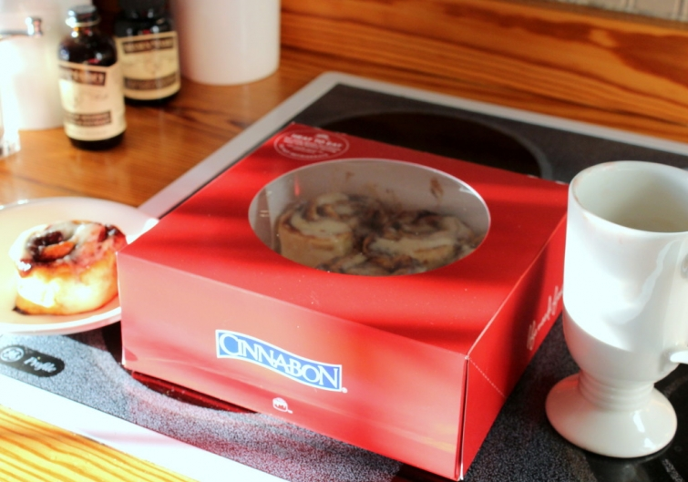

.png)
.PNG)
.PNG)
.PNG)
.PNG)
.PNG)
.JPG)
.JPG)
.PNG)
.PNG)


This Christmas Day has been a gift…a sleep late, no rush, enjoy the little moments day.
 A day with simple treats from my sister-in-law.
A day with simple treats from my sister-in-law.
A day of silliness while enjoying opening presents. (Santa scored daughter some Coach shoes for an amazingly reduced price. 🙂 )

A cozy day.
Among the gifts my husband gave me was a load of firewood. Â He knows me well.
A fun day.
My mother found my original John Denver album from my teenage years – played at least a zillion times.
(He was my true first love. 🙂 )
A day when I realize I love the box almost as much as the gift. 🙂  Have you ordered anything from Mark and Graham?? Our sons sent me a gorgeous linen table runner bordered in red grosgrain ribbon, and it came wrapped with so many beautiful details….grosgrain ribbon, a lettered paper, tags in cute envelopes.  (The boys also sent me the make up bag you see in the photo below.)
Yes, today was a much needed restful slow paced day – a day to reflect upon and enjoy the true gift of Christmas…God’s Son. Â Last night we enjoyed a party at my parents’ home, and we drove around our small town to see Christmas lights after dinner. Â I thought the walk leading up to our church was so pretty with all its lights.
Across the street from the church is a stable, built by my brother-in-law with help from some other church members. The star you see above it is suspended on a cable.  When the stable was first built, the star was across the street, but each night it has moved closer and closer – until this morning when it was directly above it.  The stable is lifesize, and as I waited to take a photo several groups came up to have their photos taken with Joseph, Mary, and baby Jesus.  🙂  They are the real stars of this season.
I hope your day has been one full of simple pleasures…a day full of joy.  I thank you for the joy you bring me each and every day with your comments on posts, your uplifting emails, your love for this blog shown when you pin my images to your Pinterest boards, and your willingness to spend your time here with me and read my rambling words.  My gift for you on this Christmas night is a Christmas song.  It starts out with organ music and then moves into a choir, (and around the 3:25 point I get a lump in my throat and good tears in my eyes. 🙂 )
I hope you enjoy it.
Come Ye to Bethlehem (Oh, Come, All Ye Faithful)
Merry Christmas!


.PNG)
As a busy, busy educator I am just now reading this post. Thank you for appealing to many of our senses through Talk of the House. I am preparing for Thanksgiving and pre-thinking Christmas. The pictures of your church and beautiful music link you shared were perfect. Thank you Kelly. I have the copy of the magazine featuring your home at Christmas. Love it and proud of you too.
———————————————————————
If you are an educator, I know just how precious your time is. So thank you for reading the post and leaving such a thoughtful comment. I am glad you enjoyed all of it. And thank you for purchasing the BHG Christmas Ideas magazine! We are very happy with how the article turned out. If you haven’t seen the winter issue of Southern Cottage, they too, have an article featuring our home. It is a rework of one from a number of years ago in Cottages and Bungalows.
Hope you have today off and that you are enjoying it (and not grading papers!)
Kelly
Just catching up on some computer time. Your post was absolutely beautiful. What a lovely church and stable. My daughter, Claire, used to have a thing for Nativities when she was little. I think she had six of them, in all shapes and sizes. Everyone here has had some kind of bug, so we have been really low-key (lazy) for the last two weeks. Not a good start to New Year Resolutions for exercise and cleaining up the house…LOL! Enjoy the rest of the remaining holiday season. I look forward to following your posts in 2015.
Still recouping here, from the hustle and bustle. It looks like you had a Christmas that brought you needed peace and comfort in a new form. Its ok to rely on our cherished past Christmas memories to sooth our heart when all our loved ones can’t be under one roof at Holiday season. You have a beautiful home and family Kelly and I thank you again for all your sharing through your wonderful blog. From the looks of the cozy fire, to the cinnamon buns and that photo of your church (so calendar worthy) I’d say you had a pleasant holiday. How sweet was it too, having your mom nurture you with dinner and that special album. Blessings and Goodness to you and your family Kelly.
Hope you had a very Merry Christmas!!
Sweet! Your church is beautiful. What a great idea for the star to get closer to the stable each night! I am so excited about your BHG news and your son’s acceptance to Yale. Merry Christmas to you in so many ways! (Praying for your father-in-law.)
Merry Christmas to you as well! Thank you for always sharing your lovely home.
Oh, my goodness – I want to live in your town!! So charming. I was lucky enough to see John Denver in concert in Louisiana when I was a senior in high school. This would have been in 1979 or 1980; to be honest, we were more into rock at that time, so JD wasn’t as popular as he had been some years before, but a group of us went and it was phenomenal! We were amazed 🙂 I’m grateful for that memory…
Kelly,
I am so glad to hear that you had a peaceful day that included some silliness. That is a perfect day. We had a wonderful day spent with family. I do love packaging almost as much as the gift. The catch in your breath as you wonder what could it be? Then you think whatever it is you will love it. The person who bought it for you knows you so very well that they shopped at your favorite store! I always feel so loved when at this time of year! Thanks for sharing your holiday with us. I love the nativity at your church. It is one of the largest I have seen. (I love nativity scenes so much that I now collect them since my family gifts them to me). I hope today finds you sleeping in, resting and just hanging out. Blessings to you and your family.
Now I know we are secret sisters, Kelly! I had that same album and just about played it out!! I had it at Nursing School and played it all the time. Actually I knew I would marry Marvin when he took me to a John Denver concert in Atlanta while we were dating. 🙂 Hope you are feeling better! Loved seeing your family’s Christmas! Sometimes small celebrations are the best.
Merry Christmas to you also and to your family! Your post, today, was so delightful…most especially since it all related to Christmas in spiritual terms. Our Church decorated a Christmas tree in our town with ornaments related to Christmas and titled our tree “T’is the reason for the season”! Your church photo was so wonderful. We had just the same day as you as my husband has not been feeling well so this year we did Chinese food and cocktail franks for dinner…ha! I even took a nap! Fantastic. But we all enjoy your posts so much I would never forget to open each one and spend a few minutes with you! Thanks for all that you do for us out here and feel better! Happy New Year.
well Kelly I’m a little late but I wanted to drop by and wish you a very Merry Christmas! I’ve been laid up since Monday with the crud and flu and need to be taking care of sweet baby boy…but of course I have to stay away until I’m better, hoping that’s today…the meds have finally kicked in! My poor mama wonders what happened to me! My sister visited with her yesterday and told her I was sick.
You bring such joy to all of us with your posts. I always feel like I’m visiting with a good friend when reading your blog….so well thought out and presented…along with your “sweet voice”.
Merry Christmas sweet friend and Happy New Year!
Merry Christmas Kelly! Everytime I see in my inbox that you have a new post, it is just like a pretty wrapped Christmas present to me!
So glad you had a restful Christmas Day! As a gift to yourself sleep in the rest of your break! Don’t overdo it getting ready for your BHG shoot ( can’t wait to see the pictures!)
Thank you for the lovely pictures of your church and the reminder of the true meaning of Christmas!
Merry Christmas Kelly! Thank you for the beautiful, inspiring posts this past year. I have a long list of “must visits” for retirement thanks to you. I didn’t know you were a John Denver fan too. I have all his albums and the matching CDs. Did you ever get to see him in person? He was AMAZING at Red Rocks, CO. He was in his element and hands down the best concert I’ve ever been too! Can’t wait to see what you have planned for 2015. Happy New Year to you and your family!
Kelly, what a lovely post to read before I am ready to drift off to sleep on this Christmas night. It is wonderful to hear that you had a quiet, cozy day–just what you need after being sick. You have incredibly thoughtful sons–it’s so great that they’re together , since they couldn’t be with you all for Christmas.
Your church and the lights & luminaria are beautiful! Enjoy your remaining break, and your dear family.
Merry Christmas from my family, to yours! Thank YOU for a year filled with beautiful, thoughtful blog post that I always enjoy reading!!!!
Vickie White
Tallahassee, Fl
Dear Kelly,
Enjoy the quiet moments, we all need that sometime.
My 4 year old grandson wanted his own “Baby Jesus Play Set” aka a Nativity Set. We went to see him open his presents this morning and he had it all set up, but he didn’t think baby Jesus had a proper bed so he had him laying on a hockey puck…..at least he knows the reason for the season.
Have a blessed and merry Christmas. Also, your church looked beautiful.
Jeanne
What a comforting posting– I could just feel the peace and restful mood of your day. I, too, have had that kind of joyful flow of not having to rush — to just let the day progress at a leaisurely pace. Just now getting everything tidied up and sitting down to enjoy the soft glow of the tree and the mantel. God is so good– blessed be His name and the Gift of His Son. Merry, merry Christmas, Kelly! Your blog sister, Louvina.
———————————————————————-
I’m so glad you had a slow paced day today Louvina. It certainly makes for a wonderful Christmas Day to me. Enjoy your tree this evening.
Merry Christmas sister!
Kelly
Merry Christmas! I love everything about this post. Sleep in again tomorrow! Merry Ho Ho!
———————————————————————
I just might! Merry Christmas to you Maria.
Kelly
http://www.jacquielawson.com/viewcard.asp?code=5094076039627&source=jl999&utm_medium=internal_email&utm_source=pickup&utm_campaign=receiver2content
Hope you can view this card, Kelly. Thanks for all the happiness and beauty you bring to my life as I am inspired by your photos and writing…..and especially all the happy red! Be blessed. Be well.
——————————————————————–
Thank you Joan! I was able to see the cute card. How thoughtful of you. 🙂 (Loved the bells for the maids a milking.) Merry Christmas!
Kelly